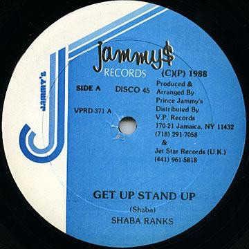

LP
Get Up Stand Up
Shabba Ranks
Media: — · Sleeve: —
—
Personal
Discogs SuggestedCA$10.83
Discogs MedianCA$10.83
Discogs HighCA$10.83
- Physical Copy ID
- BB-LP-246
- Year
- 1988
- Label
- Jammy's Records
- Catalog #
- VPRD-371
- Country
- Jamaica
- Genre / Style
- Reggae · Dancehall